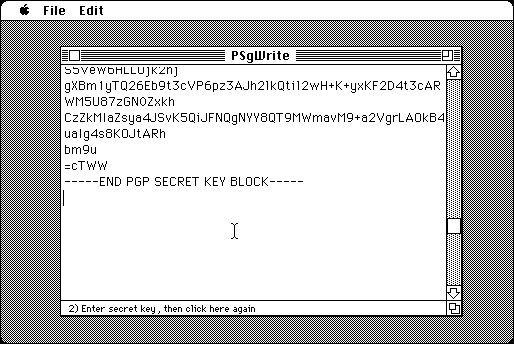

Download
psgwrite-1.2.0.zip (info) a zipped hfs disk image and checksum file. The disk image can be mounted with Mini vMac. Includes source code.
PSgWrite is a tool for creating digital signatures, just like SigWrite, except that it uses a different format that is more or less compatible with the program MacPGP.

The related tool PSgCheck can check digital signatures created with PSgWrite.
PSgWrite is in part descended from MacPGP source code, which, as far as I can tell, allows derived works for noncommercial use. PSgWrite is generally compatible with MacPGP, but it is easier to legally distribute, since it doesn’t do cryptography. Since it only does one thing it should also be easier to use.
PSgWrite only handles a subset of secret keys that MacPGP does. For one thing, it does not handle encrypted keys, which is what MacPGP would normally generate.
See the Compiling page for instructions on compiling PSgWrite from the source code.
:
If you find PSgWrite useful, please consider helping the Gryphel Project, of which it is a part.